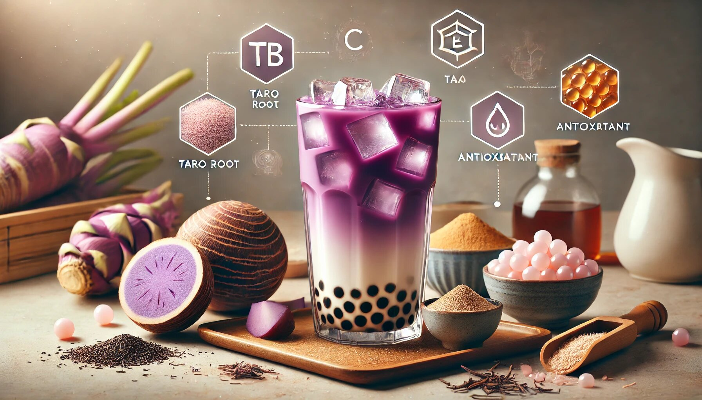

If you’ve ever strolled into a bubble tea shop, you’ve probably noticed taro milk tea on the menu. With its eye-catching purple hue and sweet, nutty flavor what does taro taste like? Think creamy, slightly earthy, and delightfully unique—it’s hard to resist. But did you know that this Instagram-worthy drink isn’t just a treat for your taste buds? Taro milk tea comes with a host of benefits that might just make it your new favorite go-to drink. Let’s dive into the wonderful world of taro milk tea and explore why it’s more than just a pretty (purple) face.
Before we get into the benefits, let’s quickly break down what taro milk tea actually is. Taro is a root vegetable native to Southeast Asia, often used in both savory and sweet dishes. It has a mildly sweet, nutty flavor and a naturally vibrant purple color (though sometimes it’s more of a light lavender or even white, depending on how it’s prepared).
Taro milk tea is made by blending taro root or taro powder with milk, tea, and sometimes sweeteners like sugar or honey. It’s often served with chewy tapioca pearls (boba) or other fun toppings, making it a delightful drink that’s as fun to sip as it is to look at.
Now that we’ve got the basics covered, let’s talk about why taro milk tea is more than just a trendy drink—it’s a powerhouse of benefits!
Taro root, the star ingredient in taro milk tea, is packed with essential vitamins and minerals. It’s a great source of:
So, while you’re sipping on that creamy, dreamy taro milk tea, you’re also giving your body a little nutrient boost. Talk about a win-win!
Let’s get real for a second—no one likes talking about digestion, but everyone loves when it’s working well. Taro root is high in dietary fiber, which is essential for keeping your digestive system in tip-top shape. Fiber helps move things along in your gut, preventing constipation and promoting regularity.
Of course, the amount of fiber in your taro milk tea will depend on how it’s prepared (powdered versions might have less fiber than fresh taro), but even a little bit can make a difference. So, the next time you’re enjoying a cup of taro milk tea, just think of it as a tasty way to keep your tummy happy.
Feeling sluggish? Taro milk tea might be just what you need to perk up. Taro root is a good source of complex carbohydrates, which provide a steady release of energy throughout the day. Unlike sugary drinks that give you a quick spike followed by a crash, taro milk tea offers a more balanced energy boost.
Plus, if you opt for a version with black or green tea, you’ll get a little caffeine kick to keep you alert and focused. It’s like a gentle nudge from your drink saying, “Hey, you’ve got this!”
Heart health might not be the first thing that comes to mind when you’re sipping on a sweet, creamy drink, but taro milk tea has some surprising cardiovascular benefits. Taro root is rich in potassium, a mineral that helps regulate blood pressure by balancing out the effects of sodium in your diet.
Additionally, the fiber in taro can help lower cholesterol levels, reducing your risk of heart disease. Of course, moderation is key—especially if your taro milk tea is on the sweeter side—but it’s nice to know that this delicious drink can be part of a heart-healthy lifestyle.
Taro root is loaded with antioxidants, which are compounds that help protect your body from damage caused by free radicals. Free radicals are unstable molecules that can lead to chronic diseases and aging (yikes!). Antioxidants neutralize these pesky molecules, keeping your cells healthy and your body functioning at its best.
The vibrant purple color of taro is a clue to its antioxidant content—many purple fruits and veggies get their hue from anthocyanins, a type of antioxidant with anti-inflammatory and immune-boosting properties. So, every sip of taro milk tea is like a tiny shield for your body.
If you’re gluten-free or vegan, taro milk tea can still be on the menu for you! Taro root is naturally gluten-free, making it a safe choice for those with celiac disease or gluten sensitivity. And if you swap out regular milk for a plant-based alternative like almond, oat, or coconut milk, you’ve got yourself a delicious vegan treat.
It’s always a good idea to check with the shop or read the ingredients if you’re buying pre-made taro milk tea, but with a little customization, this drink can fit almost any dietary need.
Who doesn’t want glowing, healthy skin? Taro root is rich in vitamins E and C, both of which are known for their skin-loving properties. Vitamin E helps protect your skin from damage caused by UV rays and pollution, while vitamin C boosts collagen production, keeping your skin firm and youthful.
Plus, the antioxidants in taro help fight inflammation, which can reduce redness and acne. So, while you’re sipping on that taro milk tea, you’re also giving your skin a little love. It’s like a spa day in a cup!
Let’s be honest—sometimes, you just need a little pick-me-up. Taro milk tea, with its creamy texture and sweet, comforting flavor, is the perfect drink to lift your spirits. The act of treating yourself to something delicious can be a mood booster in itself, and the natural sugars in taro can give you a quick burst of happiness.
Plus, if you’re sharing a cup with friends or enjoying it as a mid-day break, it’s a great way to relax and recharge. Life’s too short to skip the little joys, and taro milk tea is definitely one of them.
One of the best things about taro milk tea is how versatile it is. You can enjoy it hot or cold, with or without boba, and adjust the sweetness to your liking. Some shops even offer toppings like pudding, grass jelly, or aloe vera for an extra twist.
If you’re feeling adventurous, you can even try making taro milk tea at home. All you need is taro powder or fresh taro root, milk, tea, and a blender. It’s a fun way to experiment with flavors and create a drink that’s perfectly tailored to your taste buds.
Let’s not forget the most obvious benefit of taro milk tea—it’s downright delicious! The unique flavor of taro, with its subtle sweetness and nutty undertones, sets it apart from other milk tea flavors. It’s a refreshing change from the usual chocolate or vanilla options, and its vibrant color makes it a feast for the eyes as well as the palate.
Whether you’re a bubble tea newbie or a seasoned pro, taro milk tea offers a flavor experience that’s hard to beat. It’s like a little adventure in every sip.
If you’ve ever tried Thai tea, you know it’s a magical concoction that combines rich, creamy flavors with a hint of sweetness and a burst of vibrant orange color. But did you know that this delicious drink is not just a treat for your taste buds but also has some surprising health benefits? Yes, Thai tea isn’t just a pretty face—it’s good for you too! In this article, we’ll explore why Thai tea is good for you, its benefits, and how you can make it at home. So, grab a cup of your favorite beverage (preferably Thai tea) and let’s dive in!
Taro milk tea is more than just a trendy drink—it’s a nutrient-packed, mood-boosting, heart-healthy treat that’s as good for your body as it is for your soul. From its antioxidant properties to its digestive benefits, this purple wonder drink has a lot to offer.
So, the next time you’re at a bubble tea shop, why not give taro milk tea a try? Whether you’re in it for the health benefits, the unique flavor, or just the joy of sipping something delicious, you really can’t go wrong. And who knows? It might just become your new favorite drink.
Cheers to taro milk tea—a drink that’s as beneficial as it is beautiful!
Disclaimer: While taro milk tea has many benefits, it’s important to enjoy it in moderation, especially if it contains added sugars or high-calorie toppings. Always consult with a healthcare professional if you have specific dietary concerns or health conditions.